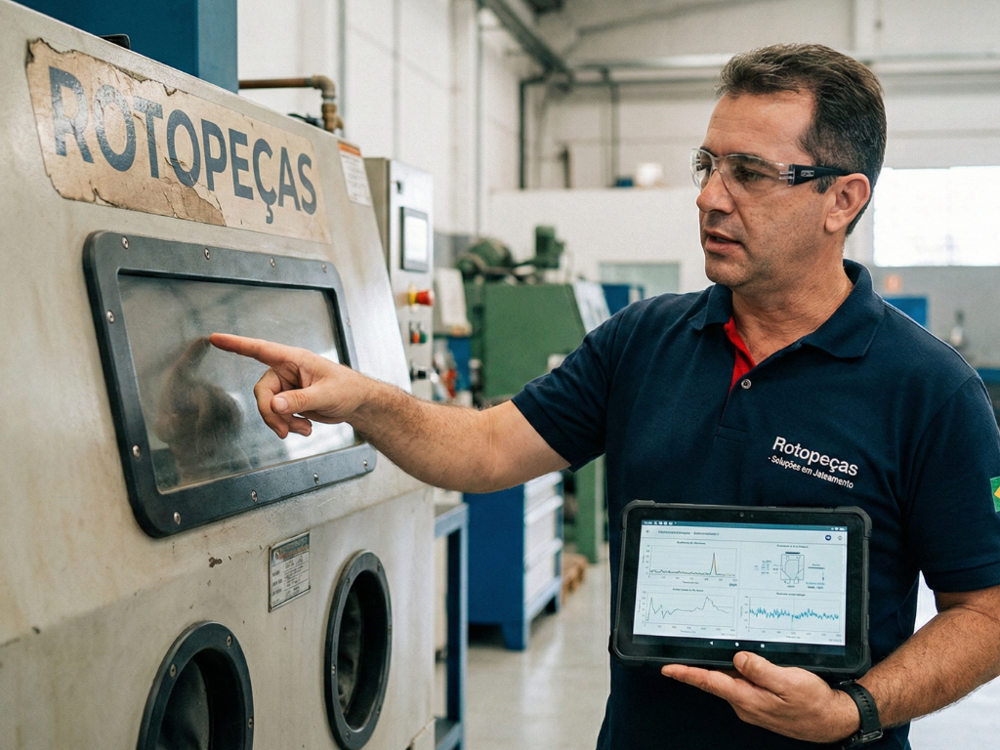

Especialistas em fabricação de máquinas de jateamento que entregam mais do que um abrasivo — entregamos o sistema completo otimizado para a sua fundição.

Enquanto outros fornecedores simplesmente entregam o produto, nossa equipe possui formação técnica especializada na fabricação e configuração de máquinas de jateamento. Isso nos dá uma visão sistêmica única: entendemos como cada variável — da máquina ao abrasivo — impacta no resultado final da sua fundição.
Quando você contrata a Rotopeças, não está comprando uma granalha. Está adquirindo uma solução integrada e personalizada para a sua operação de jateamento.
Nossa abordagem elimina o desperdício de abrasivo, reduz o desgaste da máquina e maximiza a qualidade do acabamento das peças fundidas — com suporte técnico contínuo da nossa equipe.
Iniciamos com um diagnóstico profundo da sua fundição. Não fazemos recomendações genéricas — estudamos sua operação, o tipo de peça fundida, o nível de acabamento desejado e as condições atuais da sua máquina de jateamento.
Com base na avaliação, realizamos a otimização da máquina sem custo adicional. Ajustamos parâmetros críticos para garantir que o equipamento esteja operando no fluxo ideal antes de qualquer fornecimento de abrasivo.
Após a configuração, indicamos com precisão a granalha de aço inox ideal para a sua aplicação específica — considerando liga, granulometria e formato (esférico ou cilíndrico) para o melhor custo-benefício.
Nossa relação não termina na entrega. Mantemos uma equipe técnica especializada disponível para reposição ágil de peças, manutenção preventiva e suporte contínuo — garantindo a continuidade da sua produção.
A solução integrada elimina o uso de abrasivo errado, reduzindo custos operacionais significativamente.
Granalhas com densidade ≥ 7,80 g/cm³ e composição química certificada para máxima durabilidade.
Estoque local em Joinville/SC para reposição ágil e atendimento técnico sem espera.
Equipe formada por especialistas em fabricação de máquinas — não apenas vendedores de abrasivo.
Análise gratuita da sua operação. Sem compromisso. Com especialistas de verdade.